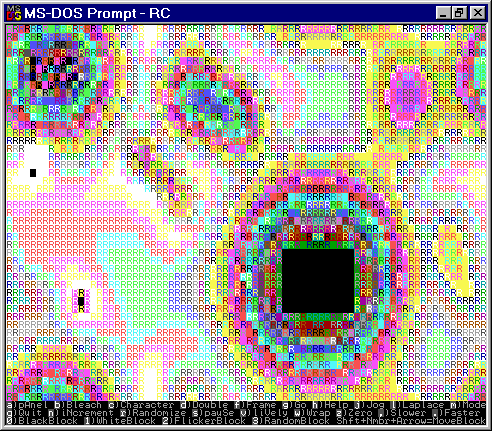
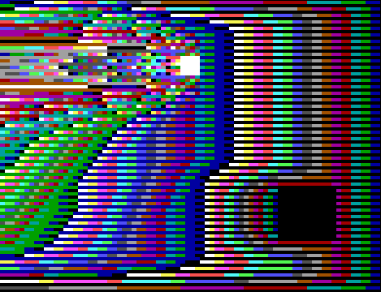
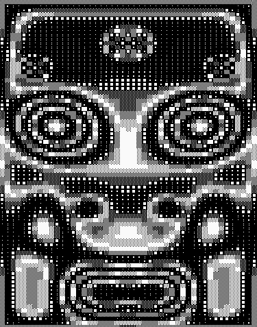
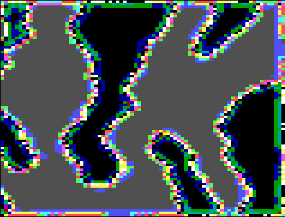
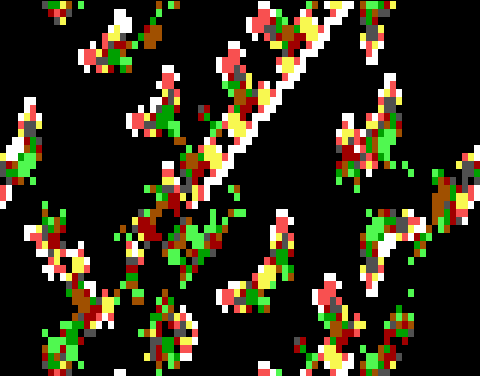
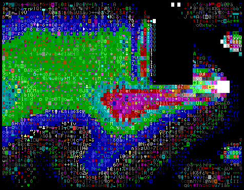

Our programs work by directly accessing the textmode refresh buffer, which is located on the screen controller card. In order to get an idea of which modes work best on your machine, start up RC. If your machine is a Mono, then the program will detect this and will stick to this single mode, ignoring any requests to change to one of the color modes. If your machine is not a Mono, you can cycle among the modes Clunker, Clone, EGA, and VGA by pressing m repeatedly. If you are confused about what mode you are in, use a to toggle in and out of the control panel. "Clunker" is politely called "CGA1" on the control panel, and "Clone" is called "CGA2".
"Mono" machines have a card called the MDA (Monochrome Display Adapter) which stores the screen information at the hexadecimal address B000, as opposed to the address B800 which all color machines use. Machines with the Hercules graphics adapter card still have their text screen information at B000, so they behave essentially like Monos.
A "Clunker" is a machine which does have screen memory at B800, but which uses an older kind of screen controller. The original IBM® PCs have this card. When possible, our programs read and write directly to the screen's memory. On the older Clunkers, doing this produces snow (random flashes of colored static) on the screen as well as the desired image. This is because the cathode ray tube controller on a Clunker is "unable to walk and chew gum at the same time".
To be more accurate, I need to explain how pictures get on your screen. The screen memory holds a copy of what to put on the screen, and the electron gun scans across the cathode ray tube line by line, painting on the desired image. It sweeps down the screen from top to bottom, and then jumps back to the top of the screen and does it again. The instant when it is jumping back is called the "vertical retrace interval". On a Clunker, if I read or write anything to the screen memory while the gun is sweeping across the screen, the gun "stumbles" over the memory activity and emits a spazzy burst of snow. To avoid snow, one has to repeatedly check the status of the electron gun, waiting for the retrace interval. During this brief period of relative inactivity, one can dart in and change a byte of the screen memory without producing snow. It's a little like crossing a train track that has a train on it by crawling across really fast right after one set of wheels has passed, and getting through before the next set of wheels comes. So if you have snow, press m till it goes away, or press a to see the control panel. Once you see the control panel, you can use your arrow keys to put the highlight on the "Video Mode" cell, and once you are there, pressing Enter will cycle through the possible modes. CGA1 is the mode which prevents snow.
Because of all the waiting around to put individual pieces of information into the screen memory, the Clunker CGA1 mode runs slower than the other modes, so you shouldn't use it unless you have to. If you simply want to slow the program down, you can always do that by pressing the , (lowercase <) key. Another unattractive feature of CGA1 mode is that you will see the screen being "painted" cell by cell from top to bottom. In the higher modes, a whole new screen's worth of information is displayed at once, so that all the cells seem to be updated simultaneously without much flicker at all.
The Clone (CGA2) mode is the mode you will be using if you have a fairly recent color machine that lacks the higher-end EGA or VGA capability. (If you have a recent monochrome machine it is probably Mono, although it is possible that you have a color card driving a monochrome monitor, in which case your machine will behave like a Clunker or a Clone.) What characterizes the Clone cards is that they have enough screen memory to store four text screens at once. These virtual screens are called "pages". Our programs use two pages. At any given time, one page is being displayed, and the next screen is being gotten ready on the other page. When the new page is ready, a single command tells the screen controller to show the new page. Next the original page is used to store the update of the new page, and when it's all set we put the original page back on screen. This technique of rapid computer animation is called "paging".
The image on your computer screen is made up of horizontal "scan lines". EGA and VGA monitors have their scanlines more tightly packed together, so there are more of them than on the older mono and CGA monitors. While a normal text character is 8 scanlines high on a CGA monitor, it holds 13 scanlines on EGA and VGA monitors. This is why EGA and VGA are more desirable for intensive word processing: the characters have more detail and are easier to look at.
Normally one thinks only in terms of a computer's hardware and software, the hardware being the machine, and the software being the disks. There is also something called "firmware". Firmware is software which is printed on a small ROM (read-only memory) chip inside your computer. The Apple® Macintosh® has a large amount of firmware; IBM clones have a bit less. Whereas the Apple firmware is kept rather secret, most IBM firmware is pretty well known in the industry, and many companies make it. One of the best known firmware companies is Phoenix. Most IBM clones have a firmware "BIOS chip" from Phoenix. This chip has a number of small programs on it, and it also has specifications for what text characters look like, viewed as scanline patterns of pixels. In particular, the BIOS chip has two "character sets"' one set consisting of 8-line-high characters, for use on CGA monitors, and another set consisting of more detailed 13-line-high characters for use on EGA and VGA monitors. Even if you are in EGA or VGA mode, it is possible to ask the machine to use the old 8-line-high character set. The result of doing this is that the characters look smaller than before (8/13ths as high).
When my RC programs run in CGA modes, they have 25 rows of cells. When I am in EGA or VGA mode, I download the 8-line-high character set, which has the effect of making my textlines narrower. On an EGA monitor there is room for 43 lines of these narrower cells, and on a VGA monitor there is room for 50 lines, for a VGA monitor is in fact a bit taller and more squarish than an EGA monitor. If you run EGA mode on a VGA system you will see an unused black space at the bottom of the screen. If you run VGA mode on an EGA system you will actually be computing the colors of 7 lines of cells which do not show, and your program will run a bit more slowly due to this "wasted" computation. On an EGA or VGA system you can also select the modes CGA1 and CGA2. There is no real reason to use CGA1 unless you have to; CGA1 is slow and it flickers. But if you crave insanely rapid program execution, a good way to get it is to run CGA2 mode on an EGA or VGA. This mode runs faster simply because fewer cells are being used, so less computation is taking place.
To see most of the ASCII characters, try running the rule ASCII. You can get to this rule by typing RC at the DOS prompt, and then pressing g four times, or G once. If you run ASCII enough times on a color machine, you will eventually see each of the possible 65,536 (64K) combinations of ASCII character, foreground color and background color which textmode graphics can emit.
For most of our rules, we stick with one single ASCII character for each cell. In a rule like Rug or Brain, you can in fact vary the standard ASCII character being used by repeatedly pressing the c key. To get back to the "standard" starting character, you press Shift-C. Alternatively you can go to the control panel, move the highlight to the "Current Display Character," and press Enter to cycle through the possible characters.

If you hold c down for a long time, the selected display character will scan down past our pre-stored lookup values and into the assembly language code of the program RC. This doesn't hurt anything--all you're doing is using successive bytes of the code as your standard character number. In a sense holding down c enables you to read code! Just remember that when you want to get back to the standard characters you press Shift-C.
When the computer shows an individual letter or character on the screen, it actually uses two bytes (sixteen bits) of information. One byte, the "ASCII byte" tells which character is being used. The other byte, the "attribute byte," tells what color to make the character. Although this fact is not too well known, any CGA machine can in fact display 256 different "colors" of text. Look, for instance, at Rug, which is the rule initially shown by RC. If you press v a few times while Rug is running, you will see different colors predominate.
How do we get so many colors? When you put a character in a small rectangle of screen area, you divide the rectangle into foreground (inside the character) and background (outside the character). In normal printed text, the foreground is black and the background is white; on computer screens one usually has the foreground white and the background black. Fancy word processors often have the foregrounds white and the backgrounds blue. But any combination of foreground and background color is in fact possible, within the limits of which individual colors are displayable at all.
How many individual colors are there? Sixteen on CGA machines. An individual color is gotten by combining four on/off choices regarding Intensity, Red, Green, and Blue. Intensity + Red is Light Red; Red + Green is Yellow; Red + Green + Blue is Gray, and so on. Choosing one of sixteen colors for foreground and one of sixteen colors for background makes 256 color combinations, which is what one would after all expect, given that the text-color "attribute" is controlled by an eight-bit byte, for recall that 28 is 256.
Rug looks the most colorful when we use the character with ASCII code 176 (B0 in hexadecimal). This character is actually a "checkerboard" of alternating foreground and background, so that the 256 different choices of attribute seem to produce a smooth palette of colors when this character is used.
If we aren't concerned with background color--as in Brain, for instance, where only a few color states are used--we usually use the ASCII character 219 (DB in hex), which is simply a solid block of foreground.

Another trick involving ASCII and attribute bytes involves using the ASCII character with code 220 (hex DC). This is a half-block. The lower half of this character is all foreground, and the upper half is all background. If you press the d key when in color mode, the RC rules (other than ASCII) will toggle back and forth between using a full size character and the "half-size" character with code 220. I have adjusted my programs so that pressing d changes not only the character being used, but also the details of the screen updating procedure.
In effect, the d key toggles between "double" and "single" modes. A rule like Brain or Life will seem to have twice as many rows of cells when in double mode. Using the d key allows you to further adjust the mode control which is accomplished with the m key. In particular, as the patterns tend to look nicer when the individual cells are roughly square, you may want to usually use double mode when you are in CGA video mode, and usually use single mode when you are in EGA or VGA video mode. Of course using double mode in VGA mode is also interesting, as it puts so much information (100 rows of cells!) on the screen.
Note however that the rule Rug will actually behave differently in double mode--this is because in single mode, this rule's cells cycle through 256 states (eight bits worth), and in double mode the cells only have 16 states (four bits worth). As mentioned, the ASCII rule actually uses 64K states (sixteen bits worth), and here the d key is disabled.
If you go into double mode and then use c to change the character away from the half-block, you will get images which are a bit hard to decipher. This is because a cell moving North goes from foreground to background before moving up into the next square.
The RC rules can also run in what I call bleach mode. Pressing b toggles in and out of bleach mode without destroying the current image. A Mono will automatically start up in bleach mode. In color modes we usually use the same ASCII character for each cell and show the different cell states by using different colors. In bleach modes, we use the same color for each cell (bright) and show the different cell states by using different ASCII characters.
Which character do I use for which color? There are various ways to do it. In Brain I use a solid DB for the firing state, a checkered B0 for the refractory state, and a blank for the zero state. To represent Rug's 256 states I use a sixteenfold repeated wave of characters ranging from dark to light to dark.
When you are in bleach mode, pressing c will select different bleachtables. About 7 of them are prestored; and after you run through them you will be using the bytes of successive sections of the RC code as your bleachtable. Some of these look neat. Press Shift-C to go back to your starting bleachtable, and if it's not the right one press c once again.
You can toggle in and out of bleach mode on a Mono, but when using any rules but ASCII, the non-bleach mode looks terrible.
If you want to print one of your screens on a printer, you will want to first get the screen into bleach mode. Be aware that the standard bleaching of Rug, although of maximal visual attractiveness, includes a character which printers will show as an asterisk. You can press c for different bleachtables. The very simplest ones tend to be the ones that look best in print.
I might mention here that one of my favorite alternate bleach modes is based on four characters whose ASCII names are DD, DC, DE, and DF. They are, respectively, a left half cell, a lower half cell, a right half cell and an upper half cell. In a symmetric Rug pattern these characters give the effect of Tibetan spirals coming out of the center. I think of DD, DC, DE, and DF as four cool black guys, hiphop rappers like Run-DMC.
TO START, ENTER "rc"TO QUIT PRESS q
IF IT LOOKS BAD, PRESS m UNTIL IT LOOKS BETTER!
While an RC cellular automaton is running, the keyboard acts as a control panel. The screen will not echo the characters that you press, but it will react to many of them. Not every key does something. Pressing a non-functional key will not "hurt" or affect the program in any way. You can hold a key down to execute many repetitions of an action.
Be aware that the program is case-sensitive, and that most functional keys are lower-case. If your Caps Lock or Shift Lock key happens to be on, most keypresses will be ignored. If your Num Lock key is on, then your arrow keys will not work--unless you have an extended keyboard with a separate arrow keypad.
MAKE SURE THAT YOUR Caps Lock IS NOT ON!MAKE SURE THAT YOUR Num Lock IS NOT ON EITHER!
Here is an alphabetical list of the control keys.
The controls described as "Toggle" turn some feature on and off. The second press of a Toggle key "undoes" the first press. Controls described as "Cycle" repeatedly cycle through some small range of possibilities.
Laplace (Toggle) for Rug and ASCII rulestyles. In Rug and ASCII rulestyles, l toggles between two sorts of cell neighborhoods. When Rug comes up, the rule is that each cell takes on the average color value of its eight nearest neighbors. If you press l and go to "Laplace" mode, then each cell takes on the average color of its four nearest neighbors. In Laplace mode Rug runs faster, but will produce patterns that are not as smooth. The ASCII rule-style starts up in Laplace mode (four neighbors instead of eight). Because it has more states than Rug, ASCII tends to look smooth even in Laplace mode.
v plays a similar function in the ASCII rule. The cells of the ASCII rule have 64K possible states. Each press of the v key halves the number of states until the value of 256 is reached, at which time the number of states is wrapped back up to 64K. As in Rug, the v key works by changing the value of the RugMask which is ANDed with the cell's states each update. In Brain, pressing v loads the Life rule, and pressing Shift-V loads the Brain rule.
In Random, pressing v increases the Sparseness parameter by increments of 20, wrapping to 0 at 240. Pressing Shift-V restores the sparseness parameter to its initial value of 80.
In Vote, v does nothing.
As soon as you press Shift plus the number key, you are in the MoveBlock mode. An invisible cursor moves to the upper lefthand corner of the block in question, and the block is "stapled" to the cursor. Moving the cursor with the arrow keys moves the whole block with it. Going off the left or right edge will wrap you to the screen's other side. If you try to go off the top or the bottom of the screen, the block will "boing" and bounce back. You end the MoveBlock phase by pressing Enter.
Then you are in ReSizeBlock mode. The block's upper left corner position has now been fixed by the MoveBlock mode. The cursor jumps to the block's lower righthand corner. The block's lower right corner is effectively "stapled" to the cursor. Moving the cursor around will change the block's size. It is not possible to drag the block's lower right corner to a position to the left or above the position of the fixed upper left corner. Nothing bad happens if you try, it's just that the "staple" comes temporarily undone. When you're through resizing the block, press Enter again to terminate the ReSizeBlock mode. Note that the smallest size you can make a block is 1 cell. If you don't want to see the block at all, use the simple block toggle.
If you press a you will see the control panel. To get back to the RC display press a or ESC.
The Ruletable menu offers the options of Load, Save, ReMake, Zero, and Edit.
The Load option shows a list of the available .RUL files in the current Path directory. To choose one, use the arrow keys to move the highlight to the rule you want and press Enter. Then you can either press a to see the rule running, or you can select the Edit option of the Ruletable menu to look at the rule.
The Save option creates a .RUL file storing the lookup table which is currently running. You may create new Ruletables at random, by pressing n till you find an interesting CA, or you can create them by thinking about a rule and editing the ruletable to realize your idea.
The ReMake option is mainly for resetting to Brain if you happen to be in Brainstyle. Generally you would do better to go to the picture screen and press g and then G to simply go in and out of the rulestyle and initialize it that way. ReMake will also rerandomize the table in Random rulestyle and reset to Vote if in the Vote rulestyle.
The Zero option blanks out the Ruletable. This is convenient if you plan to create a new rule from scratch.
The Edit option shows the current Ruletable. Entries in the Ruletable are changed by using the arrow keys to move the cursor to the entry you wish to change, and then typing in the state number you wish to enter there. The Ruletable controls a semitotalistic cellular automaton as follows: a) each cell uses the row of the ruletable corresponding to its present state, b) each cell counts up the number of its neighbors that are in an odd numbered ("firing") state to arrive at an Eightsum, and c) the value of the Eightsum is used to pick the column of its row from which to draw the new state number.
Whenever you go back to the picture screen, whatever changes you made in the Ruletable will be operative. In designing a new rule you may want to go back and forth several times before finding the version you like. Once you have the version you like, use the Ruletable Save option to record it.
To update itself in a Rug rule, EveryCell takes four steps: 1) EveryCell calculates the of its eight nearest neighbors' states (the FullEightSum will range between 0 and 8×255=2040 in SingleRug and between 0 and 120 in DoubleRug); 2) EveryCell calculates the AverageNeighborState by dividing the FullEightSum by eight and throwing out any remainder (this is done by shifting the binary expansion of FullEightSum three places to the right); 3) EveryCell computes its NewState by adding an Increment (usually the increment is 1) to the AverageNeighborState; 4) as a final step, EveryCell is masked by ANDing it with the RugMask bits.
If the l key has been pressed to go into "Laplace mode," the EveryCells of Rug only look at four neighbors instead of eight neighbors, and the sum is divided by four instead of by eight.
SingleRug has beautiful colors. If you twiddle your monitor's brightness and contrast controls you can make the colors nicer. In color it's especially interesting to move the ZeroBlock around and watch the trails that it leaves. But SingleRug also looks very nice in the bleach mode. You notice different aspects of the pattern in bleach mode.
If you turn off all the blocks, turn off the Wrap, and zero the screen, then SingleRug will produce a pleasing mandala pattern on your screen. On 25-line CGA monitors, this pattern will freeze up, but on bigger monitors the pattern will start churning. In order to see it churn on CGA monitors, you can reduce the number of available states by pressing the v key twice. Each press of the v key halves the number of states which SingleRug uses, so two v presses put it down to sixty-four states. Put in terms of the RugMask, the RugMask is initially the binary number 11111111, and every time you press v, one of the leading ones is changed to a zero. If you tweak Rug patiently by turning the frame and Wrap on and off, you can also get CGA SingleRug to churn with the full 256 states. Even on VGA, pressing v is sometimes nice because it changes the colors and makes the rule livelier.
Once you are able to have Rug generating a small active mandala in the center, you can grow the mandala a bit by tapping w on and off. When you turn Wrap on, the mandala egg grows towards the screen edges, and then when you turn Wrap off it stops growing. You can tease it out to near full-screen size. If you turn Wrap on for good, a small mandala will shrink away, but a big one can sometimes manage to keep going. But usually it's nicer to leave the Wrap off and let the mandala have a few layers of what you might call rind. The rind layers show very clearly in bleach mode. Some of the later bleachtables look really cool with the mandalas--check out de brothers DD, DC, DE, and DF.
Once you can grow a fullscreen mandala there are a couple of interesting things you can do with it. One is to ruin its symmetry by flicking one of the blocks on and off. No matter how small the block or which type, the merest touch of it in the mandala's interior will cause the symmetry to break into fullblown chaos. I call a mandala like this a chaos egg. So far as I can determine, once you've got a chaos egg running, it'll run forever without ever dying down. It's also possible to get fullscreen (Wrap on) chaos going, though unless you have a block on, it's likely to die down. Keep in mind that if you want things to seethe faster, you just need to touch v once or twice or use the control panel to put in an alternate RugMask.
Another fun thing to do with a mandala is to break its fourfold symmetry without introducing full chaos. The way to do this is to give it a taste of jog mode. Hit j and then hit it again to turn it off. Now let SingleRug settle back down and you'll see a bilaterally symmetric mandala, a semimandala. Once again, it's easier to see what's happening if you're in bleach mode. Turn on Wrap to grow the semimandala out towards the screen edges, getting rid of the rind layers. It doesn't grow all that fast. When the outermost rind of the semimandala hits the screen edge, stop the Wrap. Now (are you with me, folks?) a cool thing to do is to pick up your computer monitor and put it on its side. Make sure you're in bleach mode. What you see will be a weirdly evolving oval pattern with bilateral symmetry--a totally radical cyberpunk face! Maxine Headroom!

Stare at her for awhile, and if you can get hold of an Electrohome® or a Barco computer-image projector, hie thee to a rockclub and put on a digital lightshow! Yes! When you get tired of the flowing cyber face, flick on one of the blocks for just a second. The symmetry will go and now that the monitor is on its side, you'll have one of the things I've been trying to build all along--A DIGITAL LAVA LAMP!!! But please be careful putting that monitor on its side, and don't leave it there too long.
DoubleRug tends to look too messy unless you start it from a noWrap screen that has been zeroed. But from a simple start it grows great carpet patterns. Note that it takes several minutes and thousands of program steps until the DoubleRug grows all the way in from a non-wrapping frame. Once it fills the screen, you can toy with it by pressing f, or by pressing n a few times, and then pressing Shift-N to get back to normal. You can grow its central area with a taste of Wrap, and you can cut its symmetry to twofold from fourfold with j. Imagine a department store that has RC running, with the machine hooked to a rug factory somewhere. When you find the pattern you like, you press the p key and the factory weaves you just that rug! It could happen. Why not? After all, the first use of computer-like punchcards was actually in the tapestry-weaving Jacquard loom! Rug to computer, computer to rug: now it can come full circle.
To vary DoubleRug, you can press n to increase the increment. As an increment of 16 is effectively the same as an increment of 0 for a 16-state rule, you can see all the options pretty quickly. Each time the n key is pressed, the increment is increased by one. The oddest patterns happen if you press n 7 times, putting the increment up to 8. The screen segregates into dark regions that oscillate between color 0 (black) and color 8 (gray). The boundaries between the regions are twisting multicolored worms.

Remember that pressing Shift-N will restore the increment to 1, and that you can directly control the increment from the control panel. If you race up to increment 8 real fast you won't see the worms; you kind of have to ease up there.
The Life rule has two states, 0 and 1. Count how many of your nearest eight neighbors are on. If three are on, then you turn on. If two are on, then you stay in your same state. If fewer than two or more than three neighbors are on, you turn off.
When you are running the RuleStyle Brain, you can switch to Life by pressing v. In Life you can toggle a color "echo" on and off with the e key. Pressing Shift-V gets you back to Brain. In Brain you can add extra echo states by pressing n. Both rules look nice in Double mode; press d to try it.
Brain looks interesting in jog mode. Press j. If and when things die, press r to reseed. Eventually you will be tracking an east-moving hauler. Once you have a hauler it is fun to reach in and doctor it. This is done by pressing the Insert key and then touching an arrow key. You will see a white cursor. Move it up to touch the tail of one of the gliders and press x to insert a white (firing) cell. When you press Insert again, the program starts up again, and you will see the effect of the cell you put in. If you go back to Insert mode and press Shift-X, then you will be in "pen down" mode and your cursor will leave a trail of cells. If you press 0 the cursor will go to black, and if you press 2 it will go to red.
The Rulestyle Brain is actually a whole spectrum of "NLUKY" rules. Two of the more interesting rules are RainZha which has NLUKY values of 72322 and Faders which has NLUKY values of 72222. You can set these NLUKY values on the control panel or you can doctor them interactively by pressing the keys n, l, u, k and y. When the rule is running Brain, the NLUKY values are set at 12232, so six presses of the n key and one press of the k key will turn it into Faders. If you follow that with a press of the u key you get RainZha.

The RC Faders rule being run with wrap off and frame on. This rule is NLUKY 72222. In Brain you can get it by using the NLUKY keys; or by pressing a, r, l, and selecting Faders.
Since Vote's "lookup table" is only ten binary digits, rules similar to Vote can be defined by other choices of ten digits. Pressing n will choose random rules, or you can go to the control panel and input a rule number. Try the rule number 682; this rule is known as Fredkin's parity rule.
The l key (lowercase L) toggles the ASCII rule in and out of "Laplace mode". In Laplace mode (which is the mode the rule starts up in), you only sum four of your neighbors (North, East, South and West) and divide the sum by four. If you toggle the rule out of Laplace mode, it sums its eight nearest neighbors and divides by eight--just like Rug's default mode. This is slower, but prettier.
Pressing the v key in SingleRug teaches us that when one of these averaging rules has fewer states it oscillates more chaotically. So it is not surprising that ASCII tends to settle down to pretty stable states unless you have some blocks on. As with Rug, you can reduce the number of states which ASCII uses by pressing v to halve the number of states. I'm not sure I've ever seen an ASCII chaos egg.
ASCII looks nice in bleach mode. The bleach mode version of ASCII simply interprets the high (color) byte of each cell's 16 bits. The high byte is dominant, as you can see by pressing c in color mode and setting all the character bytes to the same value.
The most interesting thing to do with ASCII is to use it to solve the two dimensional partial differential heat equation. Think of the screen as a metal plate. Turn the wrap on, randomize with an r, then turn the wrap off. Now the border cells are frozen at various values. You can think of these values as temperatures around the edge of the metal plate--say there's a piece of ice here, a heating coil there, and so on. After a few minutes the ASCII rule will "relax to an equilibrium" where there is a more or less fixed pattern of colored lines curving across the screen. This is analogous to solving a heat equation, since what each region of a metal plate actually does is try to take on the average temperatures of its neighbors...just like ASCII. The color lines are like isothermal lines of constant temperature. If you rerandomize with a new r you will (usually) get the same "solution." It's also fun to put in a "cold" ZeroBlock and watch how it perturbs the solution. You can also press Ins to get into Insert mode and set the borders to selected values. See the discussion of the Rug rule in the Theory chapter for more on this.
Another good thing to do with ASCII is to simulate turbulent flow. Since it has so many states, it does a better job of this than Rug does. Pentagon-paid researchers use Cray® supercomputers to simulate turbulent flow--but with the CelLab you can do it on your home PC.
To see turbulence, put ASCII into jog mode and turn on some blocks. Move the blocks over to the right of the screen. With nothing but zeroes or ones being jogged in from the right, the rule doesn't seem to do too much. To cure this, give the rule an increment of something like FFF0 by pressing N once to get into negative increment mode, and then pressing n sixteen times or so to go "below zero". Remember that for a sixteen-bit computer, -1 is the same as FFFF, and FFF0 is -16. A big increment like FFF0 makes periodic puffs of color waft across the screen in jogmode.

The 3D directory holds two movies called Life3D and Parity, plus AFEGAP, which is a "projector" program for showing the movies. "AFEGAP" stands for "AutoFlixtm Enhanced Graphics Adapter Project-Only Version". The Life3D and Parity files are movies in the sense that they are stored sequences of EGA graphics mode screens. To view these movies you must have an EGA, VGA, or PS/2® card and monitor.
To see both the movies on the 3D disk, enter:
3ddemo
To see just one of the movies, enter either
afegap life3d
or
afegap parity
The AutoFlix EGA projector has a few interactive controls:
In two-dimensional Life, a dead cell is turned on if it has exactly 3 living neighbors, and a living cell stays on if it has either two or three living neighbors. According to the researcher Carter Bays, a good 3D analogue of Life is found if we turn on a dead cell when it has exactly five living neighbors, and if we keep a living cell on when it has either four or five living neighbors. The Life3D movie shows three patterns: a moving "glider" and two oscillating patterns called the Rotor and the Bucking Bronco. To make the pictures easier to "read," the living cells change color as they age.
The two extra standalone programs Langton and SoundCA are to be found in the RC directory.
langton
Langton is a textmode graphics program that has most of the same keyboard controls as RC. It is not integrated into RC because its memory demands are incompatible with the demands of RC. Langton displays a simplified version of von Neumann's self-reproducing automaton. The rule in Langton only needs eight states per cell (three bits of info). Each cell updates itself by looking at its own state and at the states of its four nearest neighbors. The rule was discovered by Christopher Langton as part of his doctoral thesis work and is described in [Langton84].
The "creature" of the Langton rule is shaped like a Q: a loop with a tail. The outlines of the Q are covered by a "membrane" which holds a circulating loop of "DNA." Each time a particle of the DNA strikes the corner where the tail branches off, the DNA particle splits in two, "transcribing" or replicating itself. Each time one of the transcribed particles hits the end of the tail, it is "translated" into a certain action. The white dots tell the tail to grow ahead, and the red dots tell the tail to make a left turn. When the growing tail cuts back in on itself, the organism's cells pinch off the "daughter" organism from the "mother" organism and establish two new tails. Since the is central to the rule, each time you press z to blank the screen, the Q-creature is redrawn as well.
Since each cell's "situation" is given by fifteen bits of information, (five 3-bit neighbors), I implemented the Langton rule as a 32K byte lookup table. Once that machinery was in place, I arranged it so that if you press n, new random entries are placed in the lookup table. If you press N, the lookup table is randomized in a symmetrical way, so that N, E, S, and W are treated equally.
As with the Random rulestyle of RC, we can set the Sparseness of the random lookup tables by pressing the v key. In Langton the Sparseness is best thought of as having an integer setting somewhere between 0 and 12. When you start the rule, the Sparseness is set at 4. Each time you press v the Sparseness is incremented by 1. After 12, the Sparseness wraps back to 0. If you press Shift-V, the Sparseness is set directly to 0. In trying out the various random Langton rules, it is a good idea to set the FlickerBlock to on by pressing 3. It also helps to press r each time a new rule is loaded.
Langton writes about the Sparseness spectrum of these random rules in [Langton86]. He divides the spectrum of possible five-cell three-bit rules into three main bands: the chaotic rules, the balanced rules, and the quiescent rules. These bands correspond roughly to the ranges:
| Sparseness | Behavior |
|---|---|
| 0-7 | Chaotic |
| 8-10 | Balanced |
| 11-12 | Quiescent |
soundca
This CGA program shows a series of randomly selected one-dimensional four-state three-cell semitotalistic rules.
In these one-dimensional CA rules, each successive line reading down the screen is calculated from the line immediately above it.
The rules shown here all use four different cell-states, so the cells can be thought of as having values 0, 1, 2, or 3. These are represented by the colors black, green, red, and yellow or by the colors black, cyan, magenta, and white. The choice of palettes alternates back and forth from rule to rule.
These are three-cell rules because each cell looks only at itself and its left and right neighbor. We can speak of the neighborhood as being L, C, and R.
These rules are called semitotalistic because each cell's new state depends on a) the value of C, and b) the sum L+R of C's neighbors. As L and R can range from 0 to 3, their sum can range from 0 to 6. As it happens, SoundCa shows semitotalistic rules in which cells with C value 0 and 3 behave the same, and cells with C value 1 and 2 act the same. A lengthy process of trial and error led to the decision to define the rules this way.
The rule definition at the bottom of each screen is to be interpreted by reading the two little lookup tables from right to left. Suppose it says, for instance,
Semitotalistic 4 state 3-cell rule: States 0 and 3 use: 3 2 1 3 1 2 0 States 1 and 2 use: 0 1 0 3 3 1 0This means that if a cell is in state 0 and the sum of its left and right neighbors is 2, then the cell's new value is to be 2. Why? Since the cell's state is 0, we look at the first lookup table. In the first line we see, reading right to left,
| Neighborhood Sum | 6 | 5 | 4 | 3 | 2 | 1 | 0 |
|---|---|---|---|---|---|---|---|
| New Cell Value | 3 | 2 | 1 | 3 | 1 | 2 | 0 |
SoundCa is a good source of interesting one-dimensional rules to program into JC format. To make this easy for you, I have already implemented the rule just described in the JC ruleprogram file SoundCA.PAS. To put a different SoundCa rule into JC, simply make a copy of SoundCA.PAS, edit in the new fourteen table numbers, and run the new program to generate a new .JC file. In comparing the standalone SoundCa to its JC simulation, note that the standalone SoundCa rules grown downward, but the JC one-dimensional simulations grow upward. If this bothers you a lot, you can turn your monitor over, although you shouldn't leave it that way for too long as it might overheat.
The unique feature of SoundCa is that it makes noise. The tone of SoundCa is recomputed after every tenth row. The computation of the tone involves going to the center of the current row and computing an average of the pixels in a 12 wide by 3 high region found there.
In general you will find that the more interesting looking rules make more interesting sounding noises. Not that any of the noises you hear are going to be terribly interesting, mind you. In fact you will often want to press s to turn the sound off. The real purpose of SoundCa is simply to demonstrate that it is in fact possible to use CAs to generate sound. If there is sufficient interest in this issue, it may be that future releases of CelLab can include a fully developed sound interface.
SoundCa has two keyboard controls: